Winter changes how people gather around a table, longer meals, more candlelight, a meal that feels like more of an occasion than a Tuesday dinner usually is.
The table decor sets that mood before the first plate ever arrives.
What keeps a winter table from tipping into cluttered comes down to balance over quantity, with real texture doing most of the heavy lifting and lighting pulling the whole thing together.
A tight, warm color palette, think warm neutrals, moody winter tones, or metallics used sparingly, almost never fails for the season.

Keeping It Practical
Leaving genuine space for food matters more than it sounds like it should, a gorgeous centerpiece that blocks half the table is not actually doing its job.
Easy cleanup deserves consideration too; anything that needs to be fully disassembled before dessert gets served is not worth the trouble twice a week through the season.
16 Winter Dining Table Decor Ideas
1. Everyday Tableware, Styled for Winter
Special dishes are not actually required.
Styling everyday plates differently for the season gets most of the same effect.
Stacking plates, adding a charger underneath, and pairing them with darker linens shifts the whole feel without a single new purchase.
Styling what is already owned tends to feel more authentic than buying something new just for one season anyway.
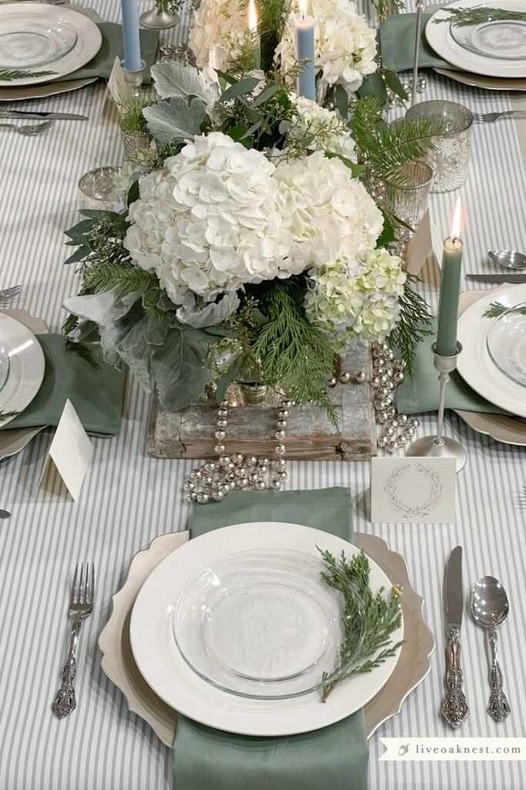
2. Dark Accents for Contrast
A few dark accents anchor an otherwise light winter table in a way that reads as intentional rather than accidental.
Black or charcoal candlesticks, napkin rings, or chargers ground the lighter elements around them beautifully.
Light and dark together consistently feel more considered than an all-light or all-dark table on its own.
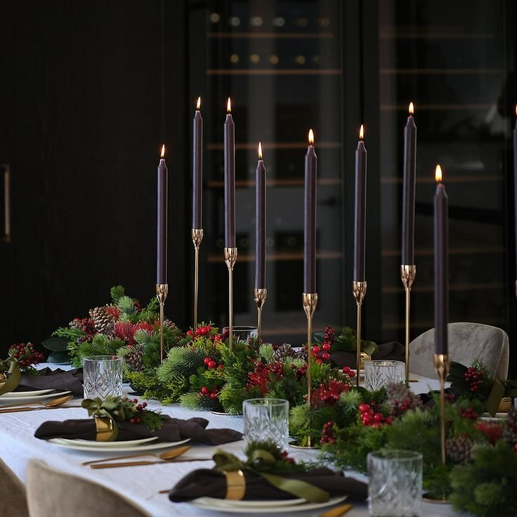
3. Subtle Winter Scent
Decor is not only visual, scent matters just as much to how a winter table actually feels to sit at.
A subtle winter scent, through a candle or a natural element like citrus or pine, adds another sensory layer without overwhelming the room.
The key word is subtle.
An overpowering fragrance competing with the actual meal is never the goal.
4. Soft Neutral Placemats
Placemats add real structure to a table without adding any bulk.
A woven or fabric placemat in a neutral tone frames each setting while keeping things cozy.
They work especially well as a lighter alternative to a full tablecloth.
Skipping the tablecloth entirely and relying on placemats alone keeps a winter table feeling a little less formal, which is not always a bad thing.
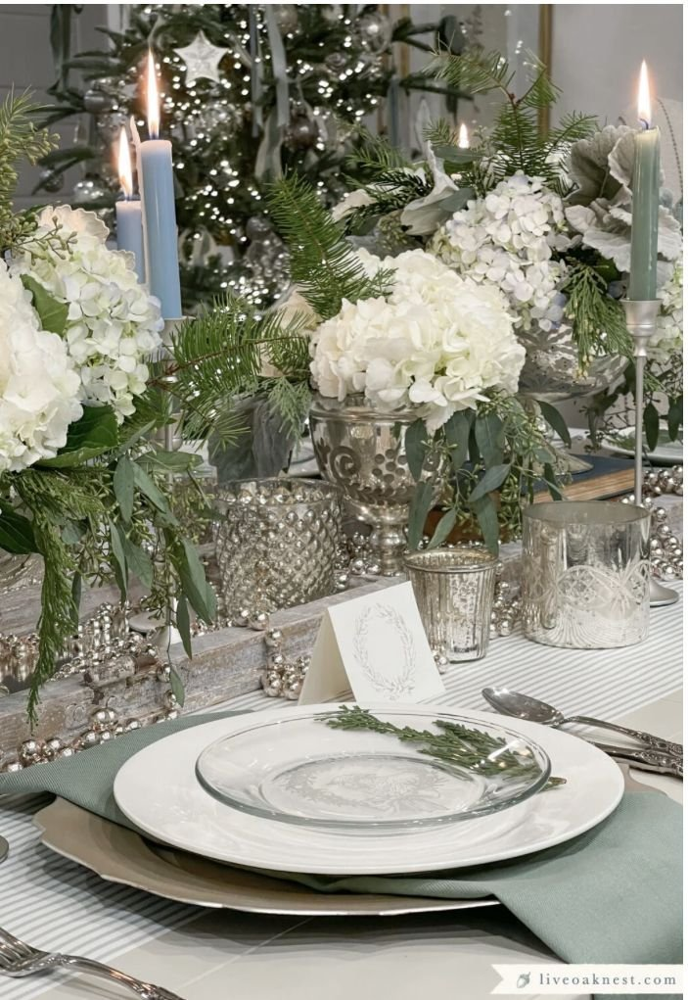
5. A Simple Winter-Themed Center Bowl
Instead of a long centerpiece running the length of the table, a single large bowl can carry the whole look on its own.
Filled with pinecones, a few ornaments, or tucked greenery, it reads as intentional without taking up much space.
It is also genuinely practical, easy to lift and move out of the way the moment food actually arrives at the table.
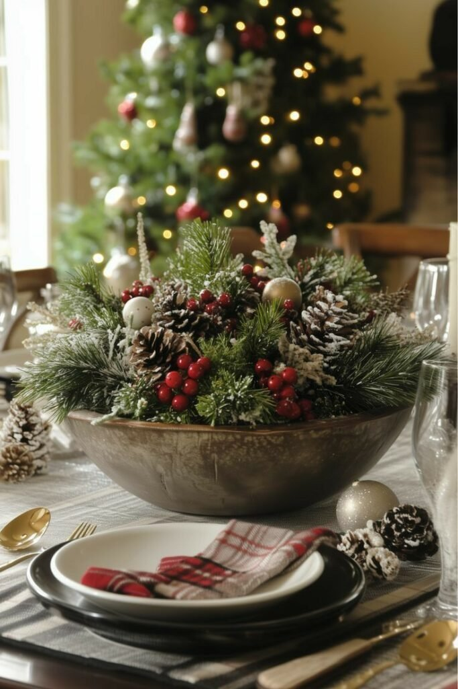

6. Vintage or Handmade Pieces
Mixing in old pieces gives a winter table real soul.
A vintage bowl, a handmade ceramic piece, or an inherited serving dish all add genuine character.
These pieces tend to spark conversation at the table almost every time they are used.
There is something satisfying about being asked about a piece's story and actually having one to tell.
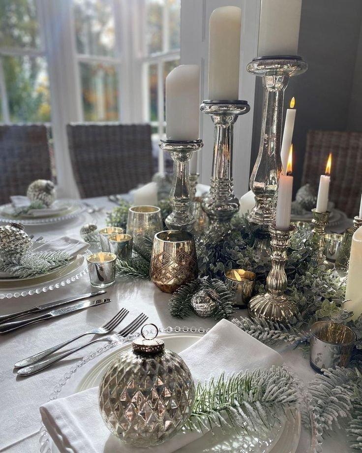
7. A Neutral Tablecloth With Textured Layers
A neutral tablecloth softens a hard table surface, and building texture on top of it through a runner, placemats, or napkins adds real depth gradually.
The layering approach works the same way dressing for cold weather does, one piece at a time, building toward something complete.
It is a reliable foundation that almost any other idea on this list can be layered over.

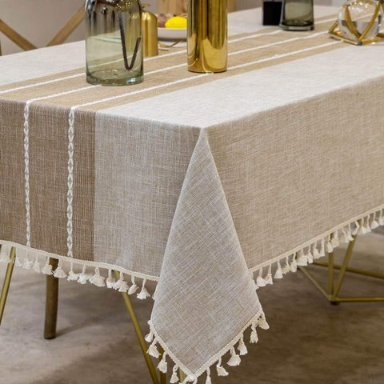
Deep Dream Linen-Look Tablecloth with Tassels, 55 x 86 Inch, Waterproof
Shop on Amazon8. Seasonal Fruit as Decor
Fruit genuinely belongs on a winter table.
Pears, pomegranates, and oranges add real color and texture without any extra effort.
It is decor that doubles as something edible, which is hard to argue with from any angle.
A bowl of seasonal fruit also fills a centerpiece role without the commitment of fresh flowers that will not last the season.
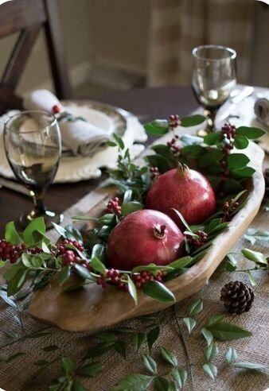
9. Minimal Place Settings With One Warm Detail
Keeping place settings simple works especially well in winter, clean plates, minimal cutlery, and just one warm detail per setting.
A sprig of greenery, a loosely folded napkin, or a simple handwritten name card all do the job well.
Winter table decor tends to shine most when it feels thoughtful rather than crowded, restraint reads as more intentional than abundance here.
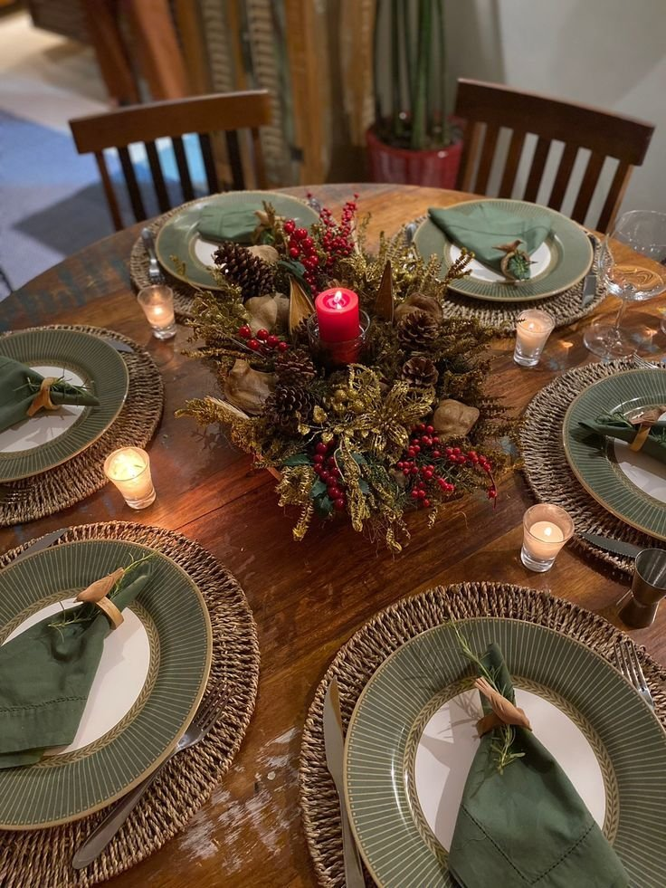
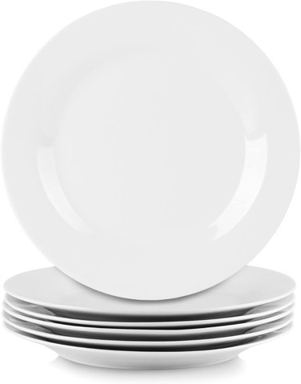
10 Strawberry Street Simply White Round Dinner Plates, 10.5 Inch, Set of 6
Shop on Amazon10. Cozy Fabric Napkins
Fabric napkins beat paper year-round, but especially in winter, where linen or cotton genuinely adds softness and intention to the table.
Folded loosely or tied simply with twine, they read as considered rather than fussy.
Fabric napkins have a way of slowing people down at the table, a small signal that the meal actually matters.
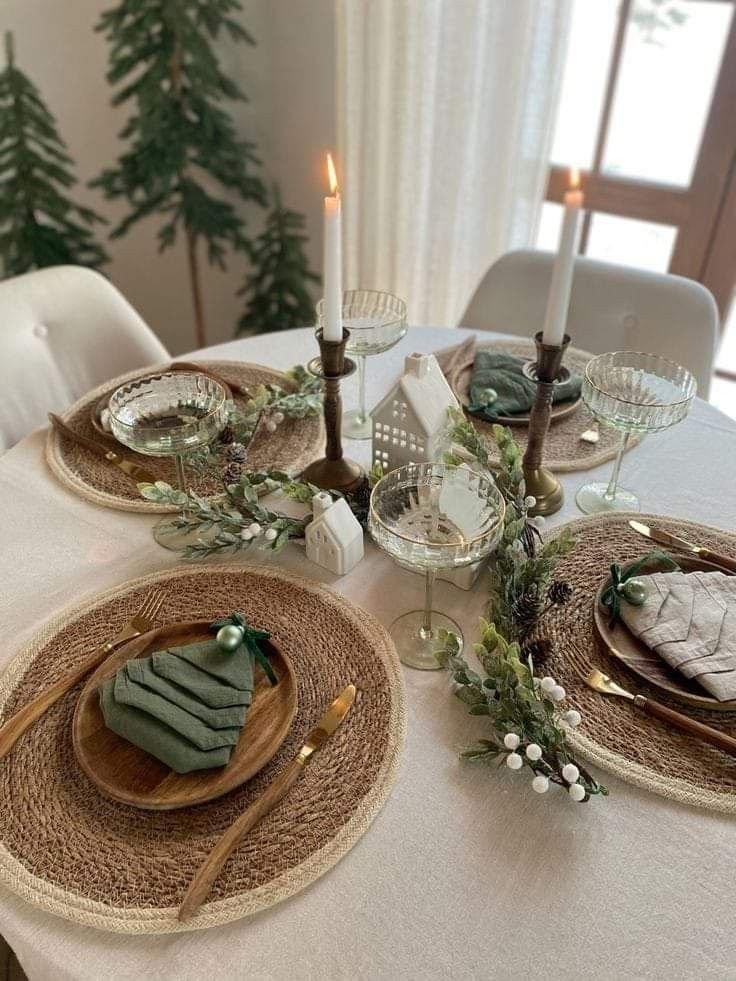
11. Natural Stone and Marble Accents
Stone feels solid and genuinely winter-appropriate.
A marble board used as a centerpiece or serving piece adds a quiet sense of luxury without being flashy.
This works especially well alongside an already-neutral palette, stone adds real interest without adding clutter to the table.
It is a strong option for anyone who wants their winter table to feel elevated without reaching for anything overtly seasonal.
12. Winter Whites
White does not have to feel cold on a winter table.
Layered with real texture, linen napkins, ceramic plates, a soft runner, it reads as genuinely inviting.
The trick is varying the finishes.
Glossy, matte, and textured whites together keep the table from looking flat or one-note.
Done right, an all-white winter table feels crisp and considered rather than sparse.
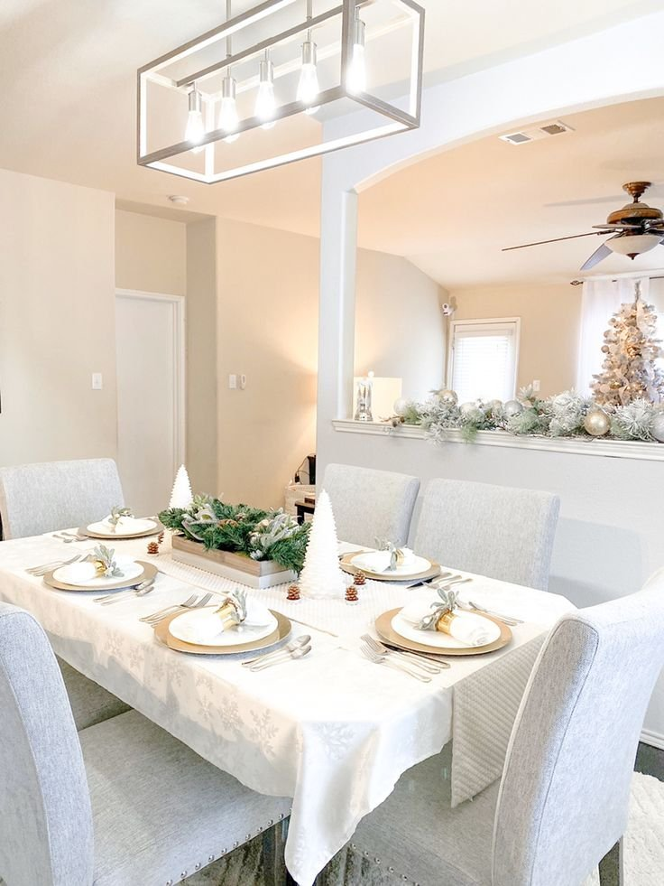
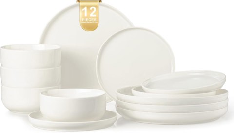
EWFEN 12 Piece Ceramic Dinnerware Set for 4, Stoneware Plates and Bowls
Shop on Amazon13. Wooden Elements for Rustic Warmth
Wood genuinely grounds a winter table.
Wooden chargers, bowls, or a center tray add instant warmth against everything else on the table.
It balances out softer textiles especially well, which is part of why wood feels so right for the season specifically.
This choice works particularly well in a modern home that leans a little too sleek on its own, wood pulls it back toward cozy.
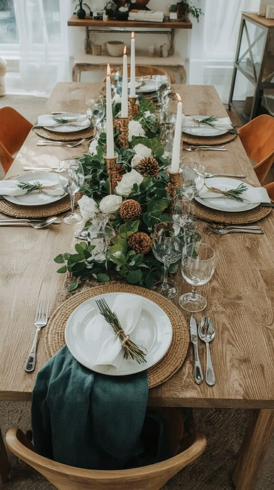
14. Candles at Different Heights
If there is one winter table trick worth committing to, it is layering candle heights, tall tapers, short pillars, and small votives mixed together.
The varied heights create real visual rhythm, and the glow bounces beautifully off glassware and silverware nearby.
A candlelit table has a way of making everyone at it feel instantly calmer, which is most of the point of styling it this carefully in the first place.
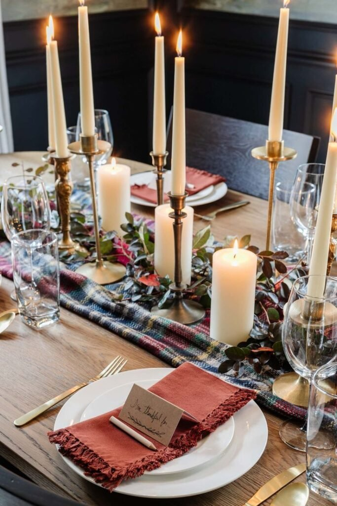

15. Layered Table Runners
Layering two runners instead of relying on one heavy piece adds real depth without overwhelming the table.
A neutral base runner topped with something textured or darker builds that layered effect naturally.
This works especially well on a long dining table, where it guides the eye down the length of the table without stealing space from the place settings themselves.
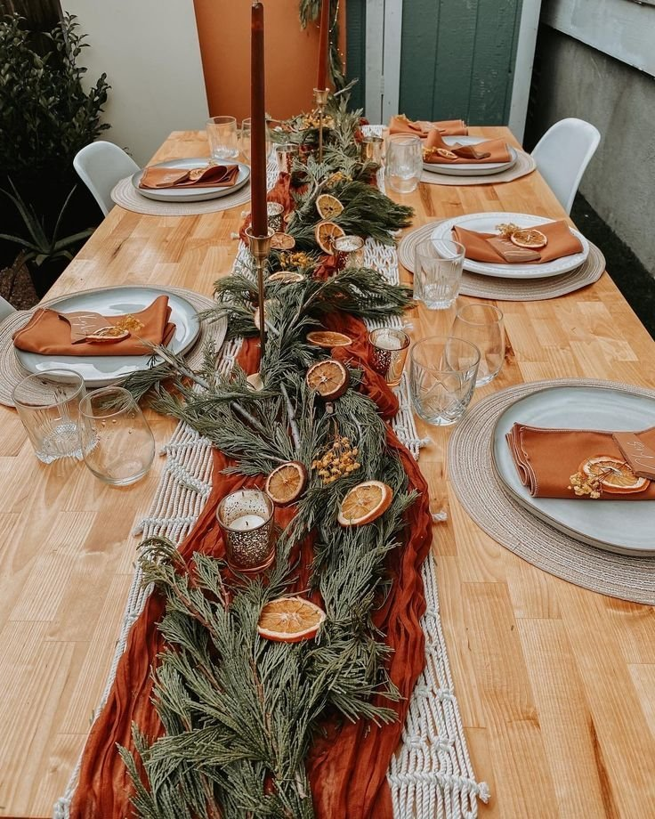

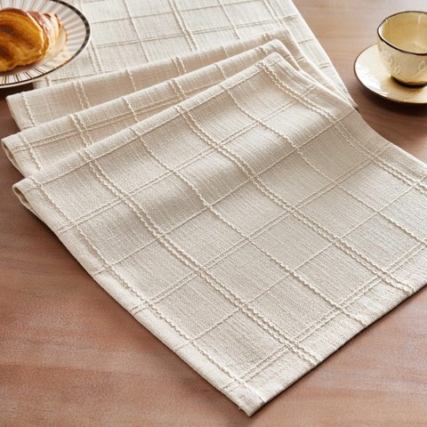
ZeeMart Linen Checked Farmhouse Table Runner, 13 x 72 Inch, Neutral Beige
Shop on Amazon16. Classic Winter Greenery
Greenery feels timeless in a way few other centerpiece choices manage.
Evergreen branches say winter instantly without ever tipping into full holiday decor.
Laying pine, cedar, or eucalyptus down the center of the table, with candles tucked in among the branches, keeps the look natural and unfussy.
Greenery has a way of softening everything around it, it is rarely the wrong call for a winter table.
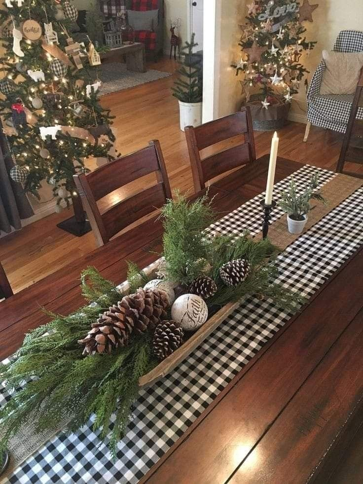
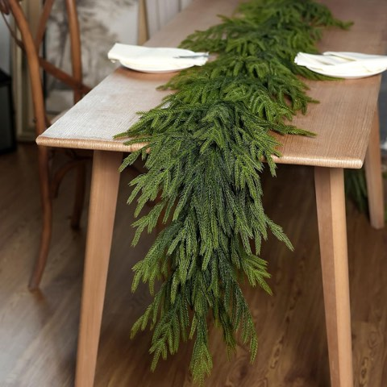
Lifelike Touch Artificial Norfolk Pine Garland, 5 Ft, Real Touch Greenery
Shop on AmazonWhat Keeps a Winter Table Cozy Instead of Cluttered
Balance matters more than quantity, a table loaded with every winter element at once reads as busy rather than festive.
Texture does most of the real work here, and lighting changes the entire mood of a meal before anyone's even sat down.
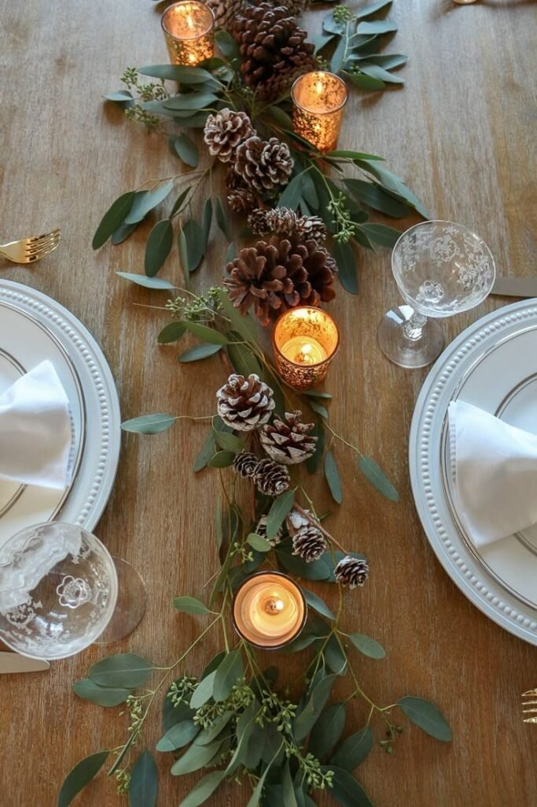
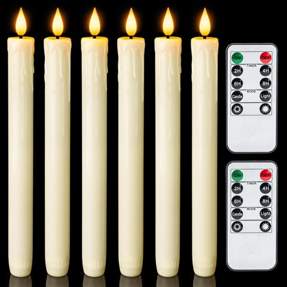
Homemory Real Wax LED Flameless Taper Candles with Remote and Timer, Ivory
Shop on AmazonFinal Thoughts
None of these sixteen ideas require buying an entirely new set of dishes or decor.
Styling what is already on hand, layered thoughtfully, gets most winter tables exactly where they need to be.
Pick two or three that genuinely fit how the table actually gets used, and build outward from there.
A considered table, even a genuinely simple one, reads as more intentional than one trying to do everything at once.